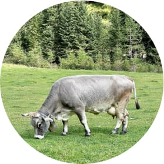

<section class="about">
    <div class="container">
        <p class="about__lable">tradition and love</p>
        <h2 class="about__title">how it’s made?</h2>
        <div class="about__img">
            <picture>
                <source srcset="./images/about/cow-desktop/cow-490.jpg 1x, ./images/about/cow-desktop/cow-490@2x.jpg 2x" media="(min-width: 1200px)">
                <source srcset="./images/about/cow-tablet/cow-330.jpg 1x, ./images/about/cow-tablet/cow-330@2x.jpg 2x" media="(min-width: 768px)">
                <source srcset="./images/about/cow-mobile/cow-278.jpg 1x, ./images/about/cow-mobile/cow-278@2x.jpg 2x" media="(max-width: 767px">
                
            </picture>
            <p class="about__description">Ice is a place where you will become not only a little happier, but also healthier. Health is the main value for us, and we follow it when creating our handmade desserts.</p>
            <p class="about__description">We use traditional recipes and 100% natural ingredients. Our products are so natural that they can be given to children from the age of three years. Sweets lovers can expect 55 types of ice cream, 15 types of coffee and 23 milkshakes.</p>
            <p class="about__description">This is enough to choose ice cream and coffee for any mood!</p>
            <button type="button">Read more</button>
        </div>            
    </div>
</section>